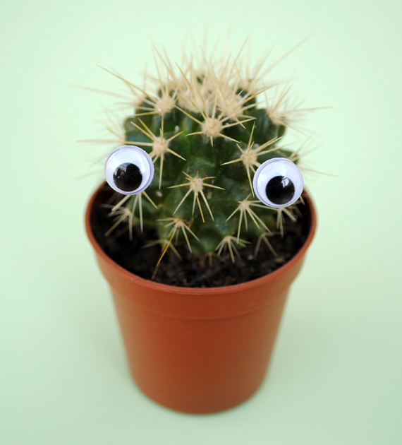

Cactus Club
Fun facts about cacti!

- Cactus is the singular word for the plant, cacti or cactuses are the plural forms.
- Cacti are native to the Americas, ranging from Patagonia in South America through to areas of western Canada. One species, Rhipsalis baccifera, is the exception, it is also found in tropical Africa, Madagascar and Sri Lanka. It is thought that droppings from migratory birds dispersed the Rhipsalis seed in these other lands.
- The cactus generally lives in dry places prone to drought, such as deserts.
- There are 1,500 to 1,800 species of cacti. Each species for the most part fall into one of two core cacti categories, these being opuntias or cactoids.
- Cacti come in all shapes and sizes from round and short through to thin and tall. The smallest grow just a few centimeters high and about 1 cm (0.4 in) across. The tallest cactus can reach heights close to 20m (66ft) and up to 1 meter thick.
- The ancient Aztec's of South America often depicted cacti in many of their sculptures and drawings. While Mexico's national coat of arms shows an eagle, a snake, and a cactus.
- Cacti show many 'adaptations' to conserve water during long dry periods. An adaptation is a trait in a living organism that helps it to survive, populate and evolve.
- The spines (thorns, stickers) of a cactus are highly modified versions of plant leaves, there are very few cacti species with true plant leaves. These sharp spines and the thick tough skin of the stem help to protect the cactus from animals who would otherwise have easy access to the liquid inside.
- The cactus manages to collect its water using its quite large root system. Small thin roots grow near the surface of the soil and collect as much rainwater as quickly as possible during the few times it rains. Cacti can also have a single long thick root called a taproot which grows much deeper to reach underground water supplies when the top soil is dry.
- Cacti can gather and hold a lot of water in their stems. The water is not pure, clear water but is quite a thick viscous liquid. It is drinkable though and has been known to save many peoples lives in the desert.
- In the early 1800s when cacti were first taken back to Europe they were cultivated as ornamental plants. Rare species were often sold to collectors for very high prices. Today cacti continue to be grown as houseplants as they are pretty easy to grow and maintain.
- Certain kinds of cactus have fruit that are a popular source of food. The dragon fruit (pitahaya) is now widely grown in Asia. The prickly pear or Indian fig are varieties of cacti whereby both the fruit (called tuna in Spanish) and the pads (called nopal in Spanish) can be eaten. The nopal industry in Mexico was worth around US$150 million in 2007 and the fruit (nopal) is an important commercial crop in Mediterranean and North African countries.
Facts source